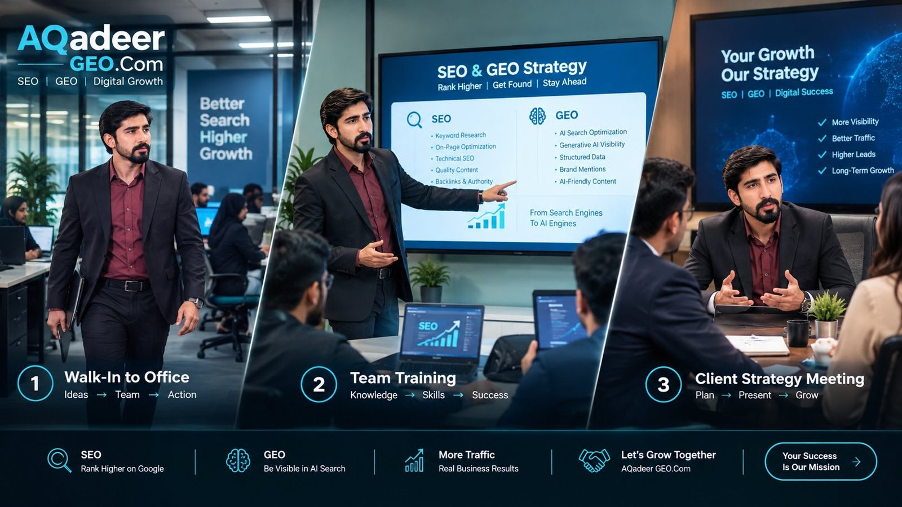
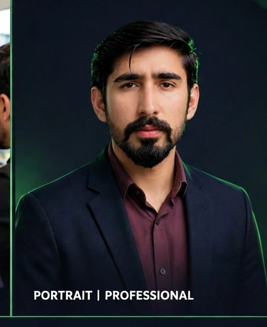
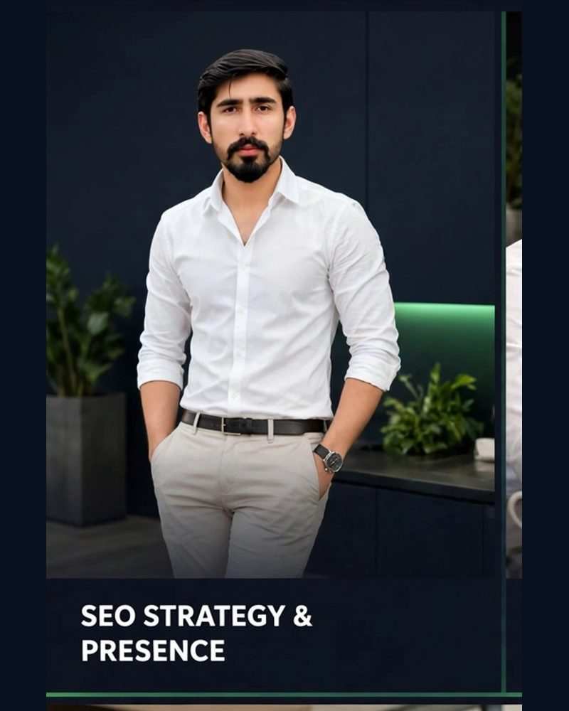
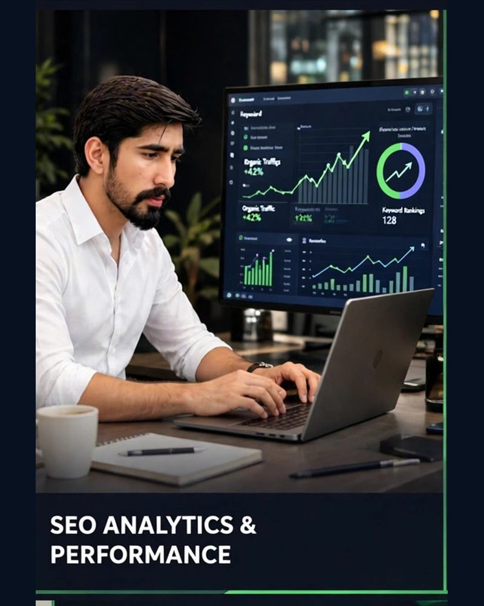
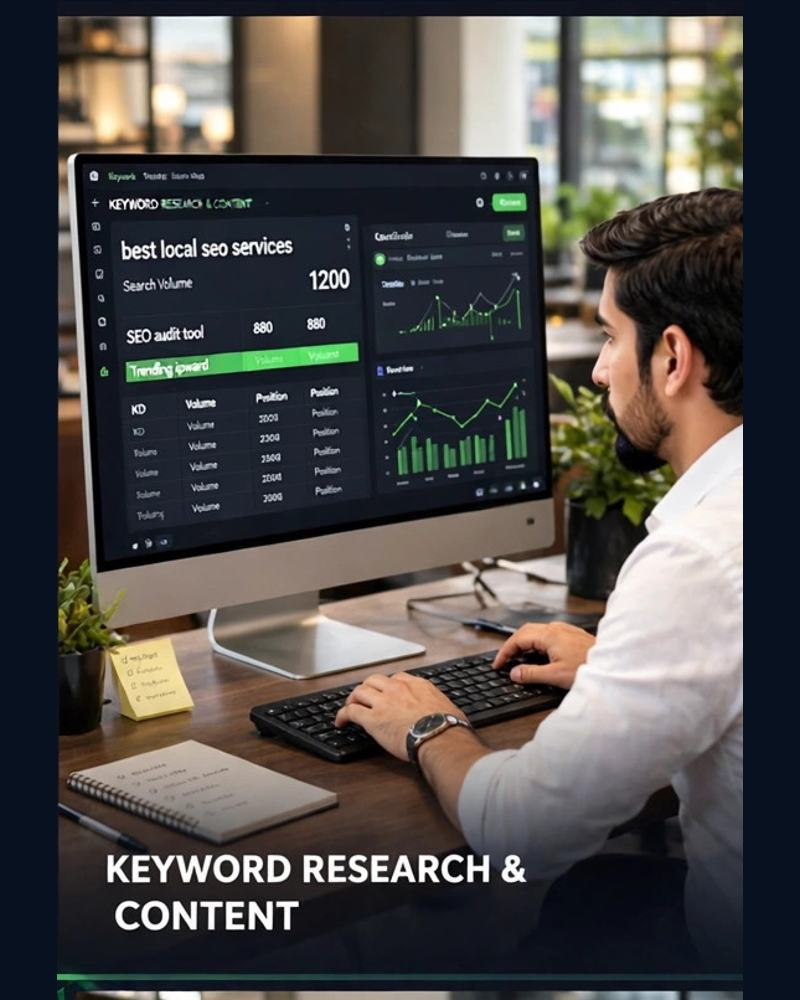
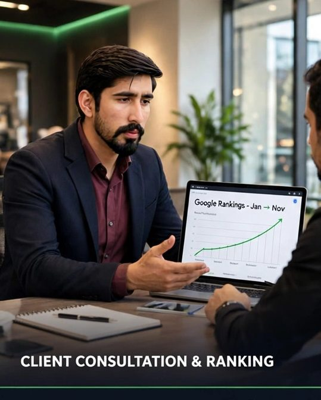

SEO · Google Ads · Digital Marketing
SEO and digital marketing services to help businesses get found on Google, win more customers and grow online — SEO, Local SEO, Google Ads, social media and content, all from one person you talk to directly.
Get a Free Consultation WhatsApp Me Explore SEO Services

Like a full agency — strategy, SEO, ads, social and content working together — but you deal directly with the person doing the work: Abdul Qadeer, Founder of Al Qadeer Digital Agency (@alqadeerdigitalagency on Instagram). No juniors, no account managers.
Rank higher on Google and win the customers already searching for what you sell.
Show up in Google Maps and “near me” searches where ready-to-buy customers look first.
One simple plan across search, social and content, tied to enquiries and sales — not vanity likes.
Search campaigns built around enquiries and profit, not just clicks.
Facebook and Instagram campaigns and posts that turn scrolling into enquiries.
Content written for Google and for AI answers — so your business is found in ChatGPT-style search too.
Start learning and fixing your own SEO today — free, no sign-up.
Six working tools: Meta Tag Generator, Word Counter, Robots.txt Generator, SERP Preview, Schema Generator and Keyword Density Checker.
Open the free tools →The exact checklist used on this website — follow it page by page on your own site.
Read the checklist →The most common reasons, explained simply, with fixes you can check yourself.
Read the guide →I believe in showing real work, not fake numbers. This website itself is my live SEO practice project — every page, blog post and ranking experiment happens here, in the open.
A full SEO services website built from scratch: keyword research, on-page SEO, schema, sitemap and a practice blog. Its Google Search Console progress is my report card.
See my SEO practice area →Six browser-based SEO tools with the AQadeer GEO.Com brand, built to help small businesses and to practise technical SEO.
Try the tools →Five years of restaurant food-photo listing and menu creation work (including Foodora / foodpanda platforms) — real listing, content and QA experience.
More about me →Menus, listings, local search and Google Maps visibility.
“Near me” searches, calls and directions from Google.
Trust-building content and local SEO for appointments.
Product-page SEO, content and social campaigns.
The same step-by-step process professional agencies use — explained honestly, with no shortcuts and no black-hat tricks.
I check your website, keywords, competitors and Google presence to find exactly what is holding your rankings back.
We choose the keywords your customers actually search, and build a clear plan for pages, content and Google Maps visibility.
Titles, content, internal links, speed and technical fixes are applied — and your content is optimised for AI search (GEO) too.
Rankings and traffic are tracked in Google Search Console with simple reports, so you always see what improved and what is next.
Choose the level that fits your business. Final scope and price are confirmed after the free audit — no hidden charges, ever.
For new and small websites that need the right foundation.
For businesses ready to grow traffic, leads and sales.
SEO combined with paid growth for faster results.
SEO strategy, analytics, keyword research and client consultation — the work behind the services on this site.




Most websites see measurable improvement in 3–6 months. Competitive keywords can take 6–12 months. SEO is a long-term asset, not an overnight trick — anyone promising page 1 in a week is not being honest.
Yes. I work online from Lahore, Pakistan, and can help businesses targeting local, national or international search — in English and in Urdu/Hindi markets.
Yes — that is exactly what this site demonstrates. A new site needs a clean technical base, the right keywords, helpful content and patience. I will tell you honestly what is possible.
Yes. I personally do the work and reply to your messages. No junior account manager, no hand-offs.
Send a message on the contact page. The first consultation is free — I will review your website and give honest recommendations, with no obligation.
Tell me what you need — SEO, ads, social media or a full digital marketing plan. Free first consultation and a free basic audit of your website.
Get Consultation Read the Blog